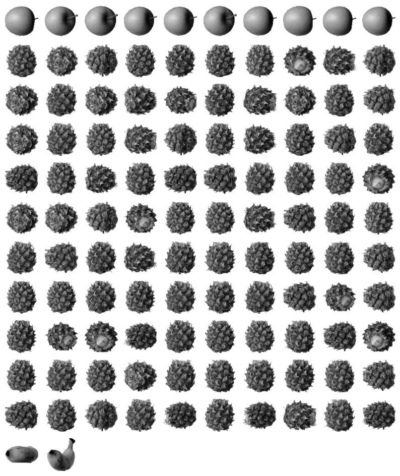
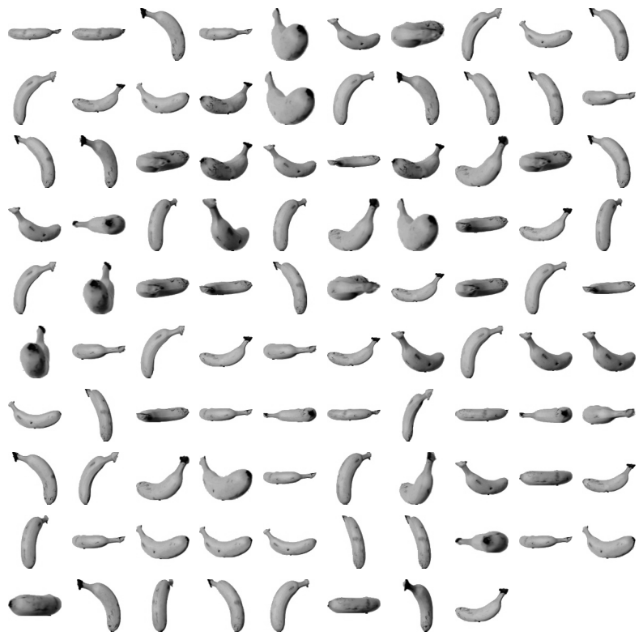
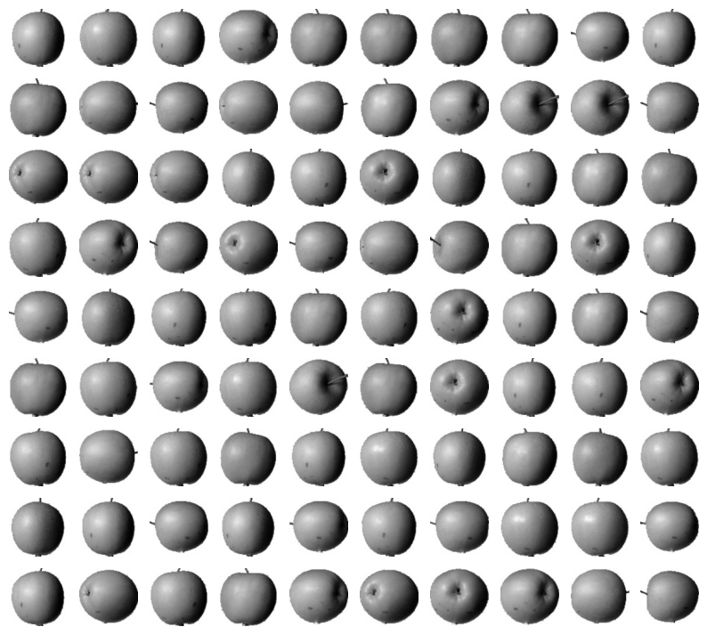
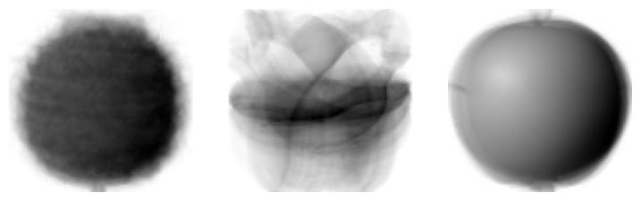
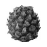
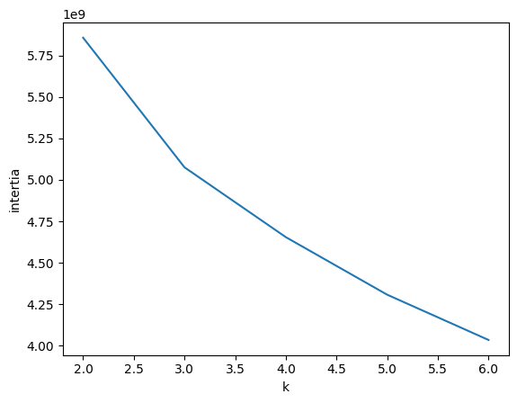
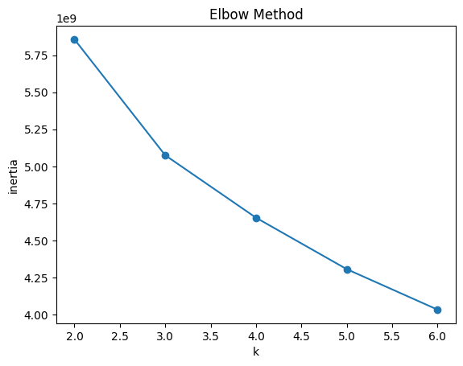

혼자 공부하는 머신러닝 08
k-평균 알고리즘
- 무작위로 k개의 클러스터 중심을 정함
- 각 샘플에서 가장 가까운 클러스터 중심을 찾아 해당 클러스터의 샘플로 지정
- 클러스터에 속한 샘플의 평균값으로 클러스터 중심을 변경
- 클러스터 중심에 변화가 없을 때까지 2번으로 돌아가 반복
!wget https://bit.ly/fruits_300_data -O fruits_300.npy
import numpy as np
fruits = np.load('fruits_300.npy')
fruits_2d = fruits.reshape(-1, 100*100)
from sklearn.cluster import KMeans
#클러스터 개수 설정
#3으로 설정했기 때문에 labels_ 배열의 값은 0,1,2 중 하나
km = KMeans(n_clusters=3, random_state=42)
km.fit(fruits_2d)
print(km.labels_)
[2 2 2 2 2 0 2 2 2 2 2 2 2 2 2 2 2 2 0 2 2 2 2 2 2 2 0 2 2 2 2 2 2 2 2 2 2
2 2 2 2 2 0 2 0 2 2 2 2 2 2 2 0 2 2 2 2 2 2 2 2 2 0 0 2 2 2 2 2 2 2 2 0 2
2 2 2 2 2 2 2 2 2 2 2 2 2 2 2 2 2 0 2 2 2 2 2 2 2 2 0 0 0 0 0 0 0 0 0 0 0
0 0 0 0 0 0 0 0 0 0 0 0 0 0 0 0 0 0 0 0 0 0 0 0 0 0 0 0 0 0 0 0 0 0 0 0 0
0 0 0 0 0 0 0 0 0 0 0 0 0 0 0 0 0 0 0 0 0 0 0 0 0 0 0 0 0 0 0 0 0 0 0 0 0
0 0 0 0 0 0 0 0 0 0 0 0 0 0 0 1 1 1 1 1 1 1 1 1 1 1 1 1 1 1 1 1 1 1 1 1 1
1 1 1 1 1 1 1 1 1 0 1 1 1 1 1 1 1 1 1 1 1 1 1 1 1 1 1 1 1 1 1 1 1 1 1 1 1
1 1 1 1 1 1 1 1 1 1 1 1 1 1 0 1 1 1 1 1 1 1 1 1 1 1 1 1 1 1 1 1 1 1 1 1 1
1 1 1 1]
#클러스터별 샘플 개수
print(np.unique(km.labels_, return_counts=True))
(array([0, 1, 2], dtype=int32), array([112, 98, 90]))
#각 클러스터별 어떤 이미지를 나타냈는지 그림으로 출력
import matplotlib.pyplot as plt
def draw_fruits(arr, ratio=1):
n = len(arr) #n은 샘플 개수
rows = int(np.ceil(n/10))
#한 줄에 10개씩 이미지를 그리고 샘플 개수를 10으로 나누어 전체 행 개수를 계산
cols = n if rows < 2 else 10
#행이 1개이면 열의 개수는 샘플 개수. 그렇지 않으면 10개
fig, axs = plt.subplots(rows, cols, figsize=(cols*ratio, rows*ratio), squeeze=False)
for i in range(rows):
for j in range(cols):
if i*10+j < n:
axs[i, j].imshow(arr[i*10+j], cmap='gray_r')
axs[i, j].axis('off')
plt.show()
# drwa_fruits() 함수는 (샘플 개수, 너비, 높이)의 3차원 배열을 입력받아
# 가로로 10개씩 이미지를 출력
# 샘플 개수에 따라 행과 열의 개수를 계산하고 figsize를 지정.
# figsize는 ratio 매개변수에 비례하여 커짐
# 2중 for 반복문을 사용하여 이미지를 그려나감
draw_fruits(fruits[km.labels_==0])

.
.
draw_fruits(fruits[km.labels_==1])

.
.
draw_fruits(fruits[km.labels_==2])

.
.
#KMeans 클래스가 최종적으로 찾은 클러스터 중심은 cluset_centers_ 속성에 저장되어 있음
draw_fruits(km.cluster_centers_.reshape(-1, 100, 100), ratio=3)

.
.
#데이터 샘플에서 클러스터 중심까지 거리로 변환해주는 transform() 메서드
print(km.transform(fruits_2d[100:101]))
[[3400.24197319 8837.37750892 5279.33763699]]
각각 레이블 0, 레이블1, 레이블2까지의 거리
레이블0이 가장 가까운 것으로 보아 이 샘플은 레이블0
.
#레이블0인지 확인
print(km.predict(fruits_2d[100:101]))
[0]
.
draw_fruits(fruits[100:101])

.
#알고리즘이 반복한 횟수
print(km.n_iter_)
4
.
.
.
n_cluster를 지금은 알고 있어서 3으로 지정
km = KMeans(n_clusters=3, random_state=42)
모른다면 최적의 값 어떻게 찾는가?
-> 엘보우 방법
엘보우 방법
클러스터 중심과 클러스터에 속한 샘플 사이의 거리의 제곱의 합 : 이너셔
이너셔 : 클러스터에 속한 샘플이 얼마나 가깝게 모여 있는지를 나타내는 값
일반적으로 클러스터 개수가 늘어나면 클러스터 개개의 크기는 줄어들기 때문에 이너셔도 줄어듦
엘보우 방법은 클러스터 개수를 늘려가며 이너셔의 변화를 관찰해 최적의 클러스터를 찾는 방법
intertia = []
for k in range(2,7):
km = KMeans(n_clusters=k, random_state=42)
km.fit(fruits_2d)
intertia.append(km.inertia_)
plt.plot(range(2,7), intertia)
plt.xlabel('k')
plt.ylabel('intertia')
plt.show()

.
정확하게 변곡점을 찾으려면
!pip install kneed
inertia = []
ks = range(2, 7)
for k in ks:
km = KMeans(n_clusters=k, random_state=42)
km.fit(fruits_2d)
inertia.append(km.inertia_)
# 엘보우 포인트 탐색
kneedle = KneeLocator(ks, inertia, curve='convex', direction='decreasing')
elbow_k = kneedle.knee
# 그래프 출력
plt.plot(ks, inertia, marker='o')
plt.xlabel('k')
plt.ylabel('inertia')
plt.title('Elbow Method')
# 꺾이는 점이 감지되었을 때만 선 추가
if elbow_k is not None:
plt.axvline(elbow_k, color='red', linestyle='--', label=f'Elbow at k={elbow_k}')
plt.legend()
print(f"Elbow point is at k = {elbow_k}")
else:
print("Elbow point could not be found.")
plt.show()
Elbow point could not be found.
